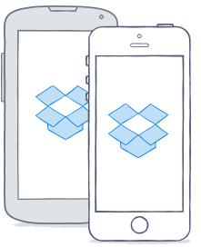
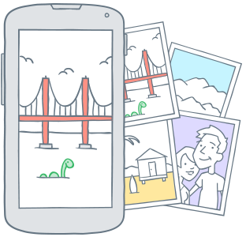
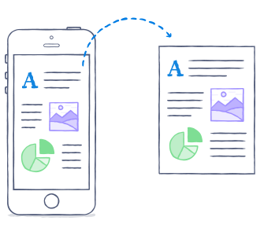

Download the mobile app
Access your files on the go from your smartphone or tablet.
Our app for iOS and Android is a great way to get even more out of Dropbox, letting you preview and share files right from your smartphone or tablet. The mobile app only downloads files when you need access, so it never hogs your data plan or storage.
If you want to make sure an important file is always available - even if you don't have an Internet connection - mark it as a Favorite by tapping the star icon. The file will be added to the Favorites tab, saved to your device for offline viewing, and updated whenever you have an Internet connection.
Downloading the app

You can download our app from Google Play and iTunes.
Or, just follow these instructions:
- Start here to find the app for your device.
- Select your device and follow the installation directions.
- Once installed, log in using your email and password.
- If you have a personal account connected to your work account, you'll have the opportunity to sign into that account, too.
Have more questions? Check out these helpful articles:
- ? Learn more about our mobile app
Previewing your files

The mobile app is great for previewing files while you're on the go.
To preview a file:
- Open up the app.
- Navigate to the file you want to view.
- Tap on the file. If the format can be previewed within the app, it will open up automatically. If the format is not supported, you'll be able to choose a third-party app to open the file.
Have more questions? Check out these helpful articles:
- ? Check out a detailed list of what formats are supported on your device
Sharing your files

Our mobile app lets you share files when you don't have access to your computer.
Make sure to learn more about the different ways to share by reading the Sharing overview article.
Sharing on an iPhone or iPad
You can send shared links from your iPhone or iPad. If you're running iOS 8 or iOS 7 (version 3.4 or above) you can create and manage shared folders as well.
To create and send a shared link:
- Swipe left or right over any file or folder name to reveal a set of icons.
- Tap the sharing icon that shows an upward arrow coming out of a box.
- Select the way you'd like to share the link, such as email, text message, or Facebook post.
- Fill out information as needed to send or post the link.
To create and share a new folder:
- Tap the three-dots icon on the top right of the screen.
- Select "Create a folder", name the folder and press "Create".
- Tap the sharing icon that shows an upward arrow coming out of a box.
- Select "Invite to folder".
- Fill out the information needed to send an invitation.
- If you want, you can manage membership to the folder by tapping on the options below "Folder Permissions".
To share an existing folder:
- Swipe right over any folder name folder name to reveal a set of icons.
- Tap the sharing icon that shows an upward arrow coming out of a box.
- Select "Invite to folder".
- Fill out the information needed to send an invitation.
- If you want, you can manage membership to the folder by tapping on the options below "Folder Permissions".
Sharing on Android devices
You can create shared folders and shared links right from within the Android app.
- Tap the downward gray arrow to the right of the file or folder.
- Tap the Share icon from the resulting menu.
- Choose if you want to create a shared link or invite someone to a shared folder.
- Fill out information as needed to send an invitation or post a link.
Have more questions? Check out these helpful articles:
- ? How do I add or upload files to my Dropbox?
Was this article helpful?
:) Yes
:( No
← Previous
Next →